Object Types¶
Point Layer¶
Sphere | Cylinder | Cone | Box | Disk | Plane | Point | Billboard | Model File
Sphere¶
Sphere with specified radius, color and opacity
| 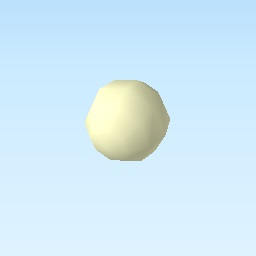 | Specific settings :
Origin :
three.js geometry class: |
Cylinder¶
Cylinder with specified radius, height, color and opacity
| 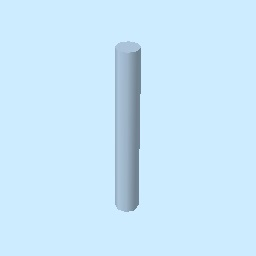 | Specific settings :
Origin :
three.js geometry class: |
Cone¶
Cone with specified radius, height, color and opacity
| 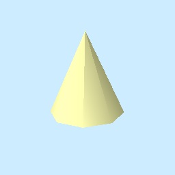 | Specific settings :
Origin :
three.js geometry class: |
Box¶
Box with specified width, depth, height, color and opacity
| 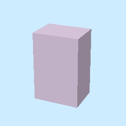 | Specific settings :
Origin :
three.js geometry class: |
Disk¶
Disk with specified radius, orientation, color and opacity
| 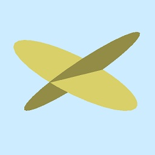 | Specific settings :
Origin :
three.js geometry class: |
Plane¶
Plane with specified length, width, orientation, color and opacity
Specific settings :
Origin :
three.js geometry class: |
Point¶
Specific settings :
Origin :
three.js geometry class: |
Billboard¶
Image which always faces towards the camera. When an image file on local file system is specified, the image file is copied to the export destination. When an image file on a web server is specified, the model file is not copied.
Specific settings :
Origin :
three.js object class: |
Model File¶
Load 3D model from supported format model file. COLLADA (*.dae) and glTF (*.gltf, *.glb) are supported.
When a model file on local file system is specified, the model file is copied to the export destination.
You need to copy the relevant files such as texture image after export. When a model file URL is
specified, the model file is not copied.
Specific settings :
Origin :
|
Line Layer¶
Line | Pipe | Cone | Box | Wall
Line¶
| 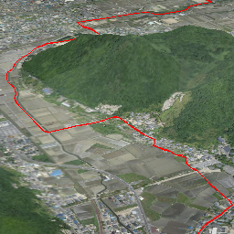 | Specific settings :
three.js object class: |
Image was created with GSI Tiles (ort, dem).
Pipe¶
Places a cylinder to each line segment and a sphere to each vertex.
| 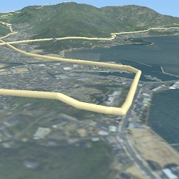 | Specific settings :
three.js geometry classes: |
Image was created with GSI Tiles (airphoto, dem).
Cone¶
Places a cone to each line segment. Heading of cone is forward direction.
| 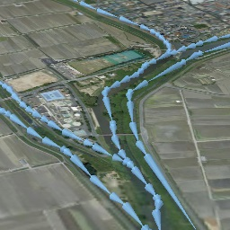 | Specific settings :
three.js geometry class: |
Image was created with GSI Tiles (ort, dem) and National Land Numerical Information (Rivers. MILT of Japan).
Box¶
Places a box to each line segment.
| 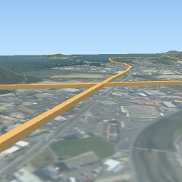 | Specific settings :
three.js geometry class: |
Image was created with GSI Tiles (airphoto, dem).
Wall¶
Makes a vertical wall under each line segment.
| 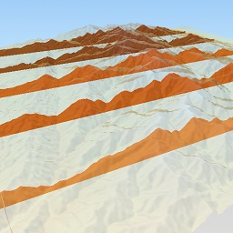 | Specific settings :
|
Image was created with SRTM3 elevation data.
Polygon Layer¶
Polygon¶
Specific settings : |
Extruded¶
Extruded polygon with specified height, color and opacity
| 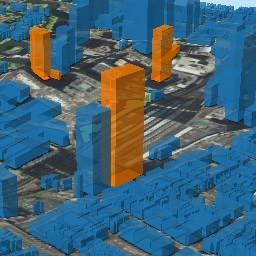 | Specific settings :
|
Image was created with GSI Tiles (ort, dem) and OpenStreetMap (© OpenStreetMap contributors, License).
Overlay¶
Overlay polygon draped on the main DEM with specified color, border color and
opacity. When the altitude mode is Relative to DEM layer, each polygon is
located at the relative height from the DEM surface. Otherwise, creates a flat
polygon at specified altitude.
| 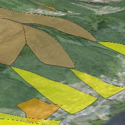 | Specific settings :
|
Image was created with GSI Tiles (ort, dem) and National Land Numerical Information (Sediment Disaster Hazard Area. Provided by Okayama prefecture, Japan).